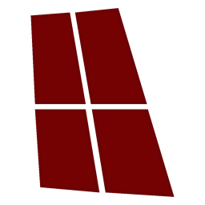

ClaraboyaHola
¿Qué hacemos hoy?
Hay una versión nueva de la app:
BajarlaA mano
Seguí donde quedasteComponer
De la idea a la canción
Producir
Cada tema, de la toma al máster
Salir a tocar
Todo listo para el show
Aparte
Otras apps de Claraboya: se bajan por separado